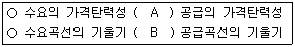
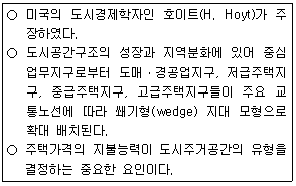
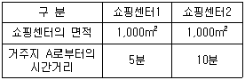
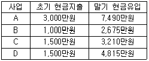
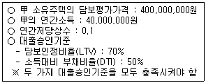
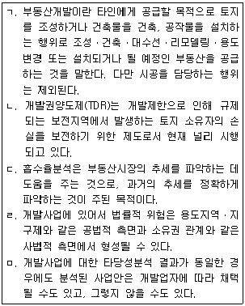
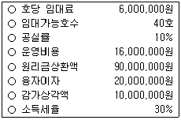
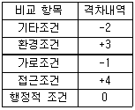
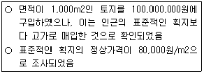
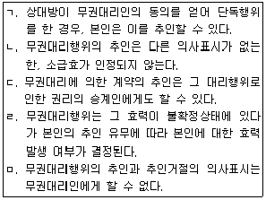

공인중개사-1차 (2012-10-28 기출문제)
1과목: 부동산학개론
1. 부동산의 자연특성 중 부증성에 관한 설명으로 틀린 것은?
- 토지는 다른 생산물처럼 노동이나 생산비를 투입하여 순수한 그 자체의 양을 늘릴 수 없다.
- 자연물인 토지는 유한하여 토지의 독점소유욕을 발생시킨다.
- 매립이나 산지개간을 통한 농지나 택지의 확대는 부증성의 예외이다.
- 토지의 지대 또는 지가를 발생시키며, 최유효이용의 근거가 된다.
- 부증성에 기인한 특정 토지의 희소성은 공간수요의 입지경쟁을 유발시킨다.
(정답률: 68%)

2. 부동산의 경제적 개념에 해당하지 않는 것은?
- 상품
- 자본
- 자산
- 환경
- 소비재
(정답률: 75%)
3. A아파트의 인근지역에 공원이 새롭게 조성되고, 대형마트가 들어서서 A아파트의 가격이 상승했다면, 이러한 현상은 부동산의 자연적ㆍ인문적 특성 중 어떤 특성에 의한 것인가?
- 생산성ㆍ용도의 다양성
- 부동성ㆍ위치의 가변성
- 영속성ㆍ투자의 고정성
- 적재성ㆍ가치의 보존성
- 부증성ㆍ분할의 가능성
(정답률: 63%)
4. 부동산 공급에 관한 설명으로 틀린 것은?
- 부동산의 신규공급은 일정한 시점에서 측정되는 저량개념이 아니라 일정한 기간 동안 측정되는 유량개념이다.
- 부동산은 공간과 위치가 공급되는 성질이 있다.
- 부동산의 개별성은 공급을 비탄력적이고 비독점적으로 만드는 성질이 있다.
- 공공임대주택의 공급은 주택시장에 정부가 개입하는 사례라 할 수 있다.
- 주택의 공급규모가 커지면, 규모의 경제로 인해 생산단가가 낮아져 건설비용을 절감할 수 있다.
(정답률: 60%)
5. 도시스프롤(urban sprawl) 현상에 관한 설명으로 틀린 것은?
- 도시의 성장이 무질서하고 불규칙하게 확산되는 현상이다.
- 주로 도시 중심부의 오래된 상업지역과 주거지역에서 집중적으로 발생한다.
- 도시의 교외로 확산되면서 중간중간에 공지를 남기기도 한다.
- 스프롤 현상이 발생한 지역의 토지는 최유효이용에서 괴리될 수 있다.
- 간선도로를 따라 확산이 전개되는 현상이 나타나기도 한다.
(정답률: 52%)
6. 부동산 수요의 가격탄력성에 관한 일반적인 설명으로 틀린 것은?(단, 다른 조건은 불변이라고 가정함)
- 부동산 수요의 가격탄력성은 주거용 부동산에 비해 특정입지조건을 요구하는 공업용 부동산에서 더 탄력적이다.
- 부동산 수요의 가격탄력성은 대체재의 존재유무에 따라 달라질 수 있다.
- 부동산의 용도전환이 용이하면 할수록 부동산 수요의 가격탄력성이 커진다.
- 부동산 수요의 가격탄력성은 단기에서 장기로 갈수록 탄력적으로 변하게 된다.
- 부동산 수요의 가격탄력성은 부동산을 지역별ㆍ용도별로 세분할 경우 달라질 수 있다.
(정답률: 68%)
7. 거미집이론에서 수렴형 모형이 되기 위한 A와 B의 조건은?(단, 수요와 공급은 탄력적이며, 다른 조건은 불변이라고 가정함)(문제 오류로 실제 시험장에서는 모두 정답 처리되었습니다. 여기서는 3번을 누르시면 정답 처리 됩니다.)

- A : <, B : >
- A : <, B : <
- A : >, B : <
- A : >, B : >
- A : =, B : =
(정답률: 65%)
8. 우리나라 토지관련 제도에 관한 설명으로 틀린 것은?
- 토지비축제도는 정부 등이 토지를 매입한 후 보유하고 있다가 적절한 때에 이를 매각하거나 공공용으로 사용하기 위한 것이다.
- 지구단위계획은 도시ㆍ군계획 수립 대상지역의 일부에 대하여 토지 이용을 합리화하고 그 기능을 증진시키며 미관을 개선하고 양호한 환경을 확보하며, 그 지역을 체계적ㆍ계획적으로 관리하기 위하여 수립하는 계획이다.
- 용도지역ㆍ지구는 토지이용에 수반되는 부(負)의 외부효과를 제거하거나 완화시킬 목적으로 지정하게 된다.
- 토지선매에 있어 시장ㆍ군수ㆍ구청장은 토지거래계약허가를 받아 취득한 토지를 그 이용목적대로 이용하고 있지 아니한 토지에 대해서 선매자에게 강제로 수용하게 할 수 있다.
- 토지적성평가에는 토지의 토양, 입지, 활용가능성 등 토지의 적성에 대한 내용이 포함되어야 한다.
(정답률: 68%)
9. 다음에서 설명하는 도시공간구조이론은?

- 선형이론
- 동심원이론
- 다핵심이론
- 중력모형이론
- 분기점모형이론
(정답률: 60%)
10. 공급의 가격탄력성에 따른 수요의 변화에 관한 설명으로 옳은 것은?(단, 수요는 탄력적이며, 다른 조건은 불변이라고 가정함)
- 공급이 가격에 대해 완전탄력적인 경우, 수요가 증가하면 균형가격은 상승하고 균형거래량은 감소한다.
- 공급이 가격에 대해 완전탄력적인 경우, 수요가 증가하면 균형가격은 변하지 않고 균형거래량만 증가한다.
- 공급이 가격에 대해 완전비탄력적인 경우, 수요가 증가하면 균형가격은 하락하고 균형거래량은 변하지 않는다.
- 공급이 가격에 대해 완전비탄력적인 경우, 수요가 증가하면 균형가격은 상승하고 균형거래량도 증가한다.
- 공급이 가격에 대해 완전비탄력적인 경우, 수요가 증가하면 균형가격은 변하지 않고 균형거래량만 증가한다.
(정답률: 53%)
11. 주택의 여과과정(filtering process)에 관한 설명으로 틀린 것은?(문제 오류로 실제 시험장에서는 모두 정답 처리되었습니다. 여기서는 4번을 누르시면 정답 처리 됩니다.)
- 주택의 여과과정은 시간이 경과하면서 주택의 질과 주택에 거주하는 가구의 소득이 변화함에 따라 발생하는 현상이다.
- 개인은 주어진 소득이라는 제약조건 하에 최대의 만족을 얻을 수 있는 주택서비스를 소비한다.
- 주택의 상향여과는 낙후된 주거지역이 재개발되어 상위계층이 유입된 경우에 나타날 수 있다.
- 주택의 하향여과는 소득증가로 인해 저가주택의 수요가 감소되었을 때 나타난다.
- 주택의 여과과정이 원활하게 작동하는 주택시장에서 주택여과효과가 긍정적으로 작동하면 주거의 질을 개선하는 효과가 있다.
(정답률: 64%)
12. 부동산시장에 관한 일반적인 설명으로 틀린 것은?
- 부동산시장은 지역의 경제적ㆍ사회적ㆍ행정적 변화에 따라 영향을 받으며, 수요ㆍ공급도 그 지역 특성의 영향을 받는다.
- 부동산시장에서는 수요와 공급의 불균형으로 인해 단기적으로 가격형성이 왜곡될 가능성이 있다.
- 부동산시장은 거래의 비공개성으로 불합리한 가격이 형성되며, 이는 비가역성과 관련이 깊다.
- 부동산시장은 외부효과에 의해 시장의 실패가 발생할 수 있다.
- 부동산시장에서는 매도인의 제안가격과 매수인의 제안가격의 접점에서 부동산가격이 형성된다.
(정답률: 56%)
13. 다음 표는 어느 시장지역 내 거주지 A에서 소비자가 이용하는 쇼핑센터까지의 거리와 규모를 표시한 것이다. 현재 거주지 A지역의 인구가 1,000명이다. 허프(Huff)모형에 의한다면, 거주지 A에서 쇼핑센터1의 이용객 수는?(단, 공간마찰계수는 2이고, 소요시간과 거리의 비례는 동일하며, 다른 조건은 불변이라고 가정함)

- 600명
- 650명
- 700명
- 750명
- 800명
(정답률: 50%)
14. 알론소(W. Alonso)의 입찰지대이론에 관한 설명으로 틀린 것은?
- 튀넨의 고립국이론을 도시공간에 적용하여 확장, 발전시킨 것이다.
- 운송비는 도심지로부터 멀어질수록 증가하고, 재화의 평균생산비용은 동일하다는 가정을 전제한다.
- 지대는 기업주의 정상이윤과 투입 생산비를 지불하고 남은 잉여에 해당하며, 토지 이용자에게는 최소지불용의액이라 할 수 있다.
- 도심지역의 이용 가능한 토지는 외곽지역에 비해 한정되어 있어 토지이용자들 사이에 경쟁이 치열해 질 수 있다.
- 교통비 부담이 너무 커서 도시민이 거주하려고 하지 않는 한계지점이 도시의 주거한계점이다.
(정답률: 57%)
15. 다음 표와 같은 투자사업들이 있다. 이 사업들은 모두 사업기간이 1년이며, 사업 초기(1월 1일)에 현금지출만 발생하고 사업 말기(12월 31일)에 현금유입만 발생한다고 한다. 할인율이 연 7%라고 할 때 다음 중 틀린 것은?

- B와 C의 순현재가치(NPV)는 같다.
- 수익성지수(PI)가 가장 큰 사업은 D이다.
- 순현재가치(NPV)가 가장 큰 사업은 A이다.
- 수익성지수(PI)가 가장 작은 사업은 C이다.
- A의 순현재가치(NPV)는 D의 2배이다.
(정답률: 41%)
16. 임대주택정책에 관한 설명으로 틀린 것은?(단, 다른 조건은 불변이라고 가정함)
- 정부가 임대료 상승을 균형가격 이하로 규제하면 단기적으로 임대주택의 공급량이 늘어나지 않기 때문에 임대료 규제의 효과가 충분히 발휘되지 못한다.
- 정부가 임대료 상승을 균형가격 이하로 규제하면 장기적으로 기존 임대주택이 다른 용도로 전환되면서 임대주택의 공급량이 감소하게 된다.
- 정부나 지방자치단체가 공급하고 있는 임대주택의 유형에는 건설임대주택, 매입임대주택, 장기전세주택이 있다.
- 정부가 임차인에게 임대료를 직접 보조해주면 단기적으로 시장임대료는 상승하지만, 장기적으로 시장임대료를 낮추게 된다.
- 주거 바우처(housing voucher) 제도는 임대료 보조를 교환권으로 지급하는 제도를 말하며, 우리나라에서는 일부 지방자치단체에서 저소득가구에 주택임대료를 일부 지원해 주는 방식으로 운영되고 있다.
(정답률: 46%)
17. 부동산시장의 경기변동에 관한 설명으로 틀린 것은?
- 부동산 경기변동이란 부동산시장이 일반 경기변동처럼 상승과 하강국면이 반복되는 현상을 말한다.
- 상향시장에서 직전 국면의 거래사례가격은 현재 시점에서 새로운 거래가격의 상한이 되는 경향이 있다.
- 회복시장에서 직전 국면 저점의 거래사례가격은 현재 시점에서 새로운 거래가격의 하한이 되는 경향이 있다.
- 후퇴시장에서 직전 국면 정점의 거래사례가격은 현재 시점에서 새로운 거래가격의 상한이 되는 경향이 있다.
- 하향시장에서 직전 국면의 거래사례가격은 현재 시점에서 새로운 거래가격의 상한이 되는 경향이 있다.
(정답률: 57%)
18. 부동산 조세에 관한 설명으로 틀린 것은?
- 소형주택공급의 확대, 호화주택의 건축억제 등과 같은 주택문제해결 수단의 기능을 갖는다.
- 부동산 조세는 부동산 자원을 재분배하는 도구로 쓰인다.
- 양도소득세의 중과는 부동산 보유자로 하여금 거래를 뒤로 미루게 하는 동결효과(lock-in effect)를 갖고 있다.
- 조세 부과는 수요자와 공급자 모두에게 세금을 부담하게 하나, 상대적으로 가격탄력성이 낮은 쪽이 세금을 더 많이 부담하게 된다.
- 절세는 합법적으로 세금을 줄이려는 행위이며, 조세회피와 탈세는 불법적으로 세금을 줄이려는 행위이다.
(정답률: 52%)
19. 도시지역의 토지가격이 정상지가상승분을 초과하여 급격히 상승한 경우 발생할 수 있는 현상이 아닌 것은?
- 택지가격을 상승시켜 택지취득을 어렵게 만든다.
- 직주분리현상을 심화시켜 통근거리가 길어진다.
- 토지의 조방적 이용을 촉진하고, 주거지의 외연적 확산을 조장한다.
- 한정된 사업비 중 택지비의 비중이 높아져 상대적으로 건축비의 비중이 줄어들기 때문에 주택의 성능이 저하될 우려가 있다.
- 높은 택지가격은 공동주택의 고층화를 촉진시킨다.
(정답률: 61%)
20. 부동산 투자와 관련된 다음의 설명 중 틀린 것은?
- 상가건물의 지분투자액이 60,000,000원이고, 이 지분에 대한 세전현금수지가 3,000,000원일 때 지분배당률은 5%이다.
- 상가건물을 구입하기 위해 자기자본 800,000,000원 이외에 은행에서 400,000,000원을 대출받았을 경우 부채비율은 50%이다.
- 순영업소득이 21,000,000원이고, 총투자액이 300,000,000원일 때 자본환원율(capitalization rate)은 7%이다.
- 아파트 구입에 필요한 총액은 400,000,000원이고, 은행에서 100,000,000원을 대출받았을 경우 자기자본비율은 75%이다.
- 부채감당비율(DCR)은 1.5이고 순영업소득이 10,000,000원일 경우 부동산을 담보로 차입할 수 있는 최대의 부채서비스액은 20,000,000원이다.
(정답률: 52%)
21. 부동산 관리에 관한 설명으로 틀린 것은?
- 부동산 관리는 물리ㆍ기능ㆍ경제 및 법률 등을 포괄하는 복합개념이다.
- 직접(자치)관리 방식은 관리업무의 타성(惰性)을 방지할 수 있고, 인건비의 절감효과가 있다.
- 간접(위탁)관리 방식은 관리업무의 전문성과 합리성을 제고할 수 있는 반면, 기밀유지에 있어서 직접(자치)관리방식보다 불리하다.
- 혼합관리 방식은 직접(자치)관리와 간접(위탁)관리를 병용하여 관리하는 방식으로 관리업무의 전부를 위탁하지 않고 필요한 부분만을 위탁하는 방식이다.
- 혼합관리 방식은 관리업무에 대한 강력한 지도력을 확보할 수 있고, 위탁관리의 편의 또한 이용할 수 있다.
(정답률: 42%)
22. 부동산 투자의 위험에 관한 설명으로 틀린 것은?
- 장래에 인플레이션이 예상되는 경우 대출자는 변동이자율 대신 고정이자율로 대출하기를 선호한다.
- 부채의 비율이 크면 지분수익률이 커질 수 있지만, 마찬가지로 부담해야 할 위험도 커진다.
- 운영위험(operating risk)이란 사무실의 관리, 근로자의 파업, 영업경비의 변동 등으로 인해 야기될 수 있는 수익성의 불확실성을 폭넓게 지칭하는 개념이다.
- 위치적 위험(locational risk)이란 환경이 변하면 대상부동산의 상대적 위치가 변화하는 위험이다.
- 유동성위험(liquidity risk)이란 대상부동산을 현금화하는 과정에서 발생하는 시장가치의 손실가능성을 말한다.
(정답률: 45%)
23. 부동산정책에 관한 설명으로 틀린 것은?
- 정부는 국민이 보다 인간다운 생활을 영위하게 하기 위하여 필요한 최저주거기준을 두고 있다.
- 용도지역ㆍ지구제는 토지의 기능을 계획에 부합하도록 하기 위하여 마련된 법적ㆍ행정적 장치이다.
- 국가는 공공기관의 개발사업 등으로 인하여 토지소유자의 노력과 관계없이 정상지가상승분을 초과하여 개발이익이 발생한 경우, 이를 개발부담금으로 환수할 수 있다.
- 정부는 부동산자원의 최적사용이나 최적배분을 위하여 부동산시장에 개입할 수 있다.
- 보금자리주택의 건설ㆍ공급은 정부가 부동산시장에 간접적으로 개입하는 방법이다.
(정답률: 61%)
24. 부동산 투자의사결정에 관한 설명으로 틀린 것은?
- 수익성지수법이나 순현재가치법은 화폐의 시간가치를 고려한 투자결정기법이다.
- 단순회수기간법이나 회계적이익률법은 화폐의 시간가치를 고려하지 않는 투자결정기법이다.
- 내부수익률이 요구수익률보다 작은 경우 그 투자를 기각한다.
- 어림셈법중 순소득승수법의 경우 승수값이 클수록 자본회수기간이 짧다.
- 일반적으로 내부수익률법보다 순현재가치법이 투자준거로 선호된다.
(정답률: 43%)
25. 한국주택금융공사의 주택연금제도에 관한 설명으로 틀린 것은?
- 연금가입자는 주택연금의 전액 또는 일부 정산시 중도상환수수료를 부담한다.
- 주택법상 주택연금을 받을 수 있는 주택의 유형에는 단독주택, 다세대주택, 연립주택 및 아파트가 해당된다.
- 주택연금지급방식은 종신지급방식과 종신혼합방식이 있다.
- 한국주택금융공사는 연금가입자를 위해 은행에 보증서를 발급하고, 은행은 한국주택금융공사의 보증서에 근거하여 연금가입자에게 주택연금을 지급한다.
- 종신지급방식에서 가입자가 사망할 때까지 지급된 주택연금 대출원리금이 담보주택 처분가격을 초과하더라도 초과 지급된 금액을 법정상속인이 상환하지 않는다.
(정답률: 58%)
26. 부동산가치에 관한 설명으로 틀린 것은?
- 사용가치는 대상부동산이 시장에서 매도되었을 때 형성될 수 있는 교환가치와 유사한 개념이다.
- 투자가치는 투자자가 대상부동산에 대해 갖는 주관적인 가치의 개념이다.
- 보험가치는 보험금 산정과 보상에 대한 기준으로 사용되는 가치의 개념이다.
- 과세가치는 정부에서 소득세나 재산세를 부과하는 데 사용되는 기준이 된다.
- 공익가치는 어떤 부동산의 보존이나 보전과 같은 공공목적의 비경제적 이용에 따른 가치를 의미한다.
(정답률: 42%)
27. 부동산집합투자기구(이하 ‘부동산펀드’)와 부동산투자회사에 관한 설명으로 틀린 것은?
- 부동산투자회사나 부동산펀드는 투자자를 대신하여 투자자의 자금을 부동산에 투자하고 그 운영성과를 투자자에게 배분한다.
- 부동산투자회사의 장점은 일반인들이 소액으로도 부동산에 투자할 수 있다는 점이다.
- 부동산투자회사의 주식을 매수한 투자자는 배당이익과 주식매매차익을 획득할 수 있다.
- 부동산펀드가 집합투자재산으로 2012년 12월 31일까지 취득하는 부동산에 대해서는 세금감면 혜택이 있다.
- 부동산투자회사의 경우에는 원금손실의 위험이 없는 반면, 부동산펀드의 경우에는 원금손실의 위험이 있다.
(정답률: 63%)
28. 80,000,000원의 기존 주택담보대출이 있는 甲은 A은행에서 추가로 주택담보대출을 받고자 한다. A은행의 대출승인기준이 다음과 같을 때, 甲이 추가로 대출 가능한 최대금액은?(단, 문제에서 제시한 것 외의 기타 조건은 고려하지 않음)

- 60,000,000원
- 80,000,000원
- 120,000,000원
- 200,000,000원
- 280,000,000원
(정답률: 37%)
29. 우리나라의 주택금융제도에 관한 설명으로 틀린 것은?
- 국민주택기금은 국민주거생활의 안정과 향상을 도모하기 위하여 국민주택의 건설이나 국민주택을 건설하기 위한 대지조성사업에 소요되는 자금을 지원하는데 사용된다.
- 한국주택금융공사는 주택저당채권의 평가 및 실사업무 등을 수행하고 주택저당채권을 매입하여 일정기간 보유하고 장기주택금융활성화를 위하여 금융기관에 대하여 주택자금대출을 지원한다.
- 대한주택보증은 주택관련 각종 보증을 통하여 분양계약자의 안전한 입주와 주택건설사업자의 원활한 사업수행을 지원한다.
- 국민주택규모를 초과하는 주택의 구입자 또는 임차자에 대해서도 국민주택기금 대출이 가능하다.
- 공공주택금융은 일반적으로 민간주택금융에 비하여 대출금리가 낮고 대출기간도 장기이다.
(정답률: 64%)
30. 주택저당대출방식 중 고정금리대출방식인 원금균등분할상환과 원리금균등분할상환에 관한 설명으로 틀린 것은?(단, 다른 대출조건은 동일하다고 가정함)
- 대출기간 초기에는 원금균등분할상환방식의 원리금이 원리금균등분할상환방식의 원리금보다 많다.
- 대출자 입장에서는 차입자에게 원리금균등분할상환방식보다 원금균등분할상환방식으로 대출해주는 것이 원금회수측면에서 보다 안전하다.
- 원리금균등분할상환방식은 원금균등분할상환방식에 비해 대출 초기에 소득이 낮은 차입자에게 유리하다.
- 원리금균등분할상환방식은 원금균등분할상환방식에 비해 초기 원리금에서 이자가 차지하는 비중이 크다.
- 중도상환시 차입자가 상환해야 하는 저당잔금은 원리금균등분할상환방식이 원금균등분할상환방식보다 적다.
(정답률: 56%)
31. 부동산개발에 관한 설명으로 옳은 것을 모두 고른 것은?

- ㄱ, ㄴ, ㄷ
- ㄱ, ㄹ, ㅁ
- ㄴ, ㄷ, ㄹ
- ㄴ, ㄷ, ㅁ
- ㄷ, ㄹ, ㅁ
(정답률: 58%)
32. 다음은 임대주택의 1년간 운영실적에 관한 자료이다. 이와 관련하여 틀린 것은?(단, 문제에서 제시한 것 외의 기타 조건은 고려하지 않음)

- 유효총소득은 216,000,000원이다.
- 순영업소득은 200,000,000원이다.
- 세전현금수지는 110,000,000원이다.
- 영업소득세는 50,000,000원이다.
- 세후현금수지는 59,000,000원이다.
(정답률: 43%)
33. 부동산개발의 위험에 관한 설명으로 틀린 것은?
- 부동산개발사업은 그 과정에 내포되어 있는 불확실성으로 인해 위험요소가 존재한다.
- 부동산개발사업의 위험은 법률적 위험(legal risk), 시장위험(market risk), 비용위험(cost risk) 등으로 분류할 수 있다.
- 이용계획이 확정된 토지를 구입하는 것은 법률적 위험부담을 줄이기 위한 방안 중 하나이다.
- 개발사업부지에 군사시설보호구역이 일부 포함되어 사업이 지연되었다면 이는 시장위험 분석을 소홀히 한 결과이다.
- 공사기간 중 이자율의 변화, 시장침체에 따른 공실의 장기화 등은 시장위험으로 볼 수 있다.
(정답률: 58%)
34. 부동산 마케팅에 관한 설명으로 틀린 것은?
- 부동산마케팅이란 부동산 활동주체가 소비자나 이용자의 욕구를 파악하고 창출하여 자신의 목적을 달성시키기 위해 시장을 정의하고 관리하는 과정이라 할 수 있다.
- 마케팅 믹스란 기업이 표적시장에 도달하기 위해 이용하는 마케팅에 관련된 여러 요소들의 조합으로 정의할 수 있다.
- 마케팅 전략 중 표적시장설정(targeting)이란 마케팅활동을 수행할만한 가치가 있는 명확하고 유의미한 구매자집단으로 시장을 분할하는 활동을 말한다.
- 주택청약자를 대상으로 추첨을 통해 벽걸이TV, 양문형 냉장고 등을 제공하는 것은 마케팅 믹스 전략 중 판매촉진(promotion)이다.
- 부동산은 위치의 고정성으로 상품을 직접 제시하기가 어렵기 때문에 홍보ㆍ광고와 같은 커뮤니케이션 수단이 중요하다.
(정답률: 52%)
35. 평가대상부동산이 속한 지역과 사례부동산이 속한 지역이 다음과 같은 격차를 보이는 경우, 상승식으로 산정한 지역요인의 비교치는?(단, 격차내역은 사례부동산이 속한 지역을 100으로 사정할 경우의 비준치이며, 결과값은 소수점 넷째자리에서 반올림함)

- 1.031
- 1.033
- 1.035
- 1.037
- 1.039
(정답률: 41%)
36. 부동산감정평가에서 가격의 제원칙에 관한 설명으로 틀린 것은?
- 부동산가격의 원칙은 부동산의 가격이 어떻게 형성되고 유지되는지 그 법칙성을 찾아내어 평가활동의 지침으로 삼으려는 행동기준이다.
- 대체의 원칙은 대체성 있는 2개 이상의 재화가 존재할 때 그 재화의 가격은 서로 관련되어 이루어진다는 원칙으로, 유용성이 동일할 때는 가장 가격이 싼 것을 선택하게 된다.
- 균형의 원칙은 내부적 관계의 원칙인 적합의 원칙과는 대조적인 의미로, 부동산 구성요소의 결합에 따른 최유효이용을 강조하는 것이다.
- 기여의 원칙은 부동산의 각 구성요소가 각각 기여하여 부동산전체의 가격이 형성된다는 원칙이다.
- 변동의 원칙은 재화의 가격이 그 가격형성요인의 변화에 따라 달라지는 것으로, 부동산의 가격도 사회적ㆍ경제적ㆍ행정적 요인이나 부동산 자체가 가지는 개별적 요인에 따라 지속적으로 변동한다는 것을 강조하는 것이다.
(정답률: 55%)
37. 다음 사례부동산의 사정보정치는 얼마인가?

- 0.50
- 0.60
- 0.70
- 0.80
- 0.90
(정답률: 53%)
38. 「감정평가에 관한 규칙」상 부동산의 평가방법에 관한 설명으로 틀린 것은?
- 건물의 평가는 원가법에 의한다. 다만, 원가법에 의한 평가가 적정하지 아니한 경우에는 거래사례비교법 또는 수익환원법에 의할 수 있다.
- 산림은 임지와 입목을 구분하여 평가하여야 하며, 입목의 평가는 수익환원법에 의하되 소경목림은 거래사례비교법에 의할 수 있다.
- 영업권의 평가는 수익환원법에 의한다. 다만, 수익환원법에 의한 평가가 적정하지 아니한 경우에는 거래사례비교법 또는 원가법에 의할 수 있다.
- 과수원의 평가는 거래사례비교법에 의한다. 다만, 거래사례비교법에 의한 평가가 적정하지 아니한 경우에는 유령수로 구성되어 있는 과수원의 경우에는 원가법으로, 그 외의 경우에는 수익환원법으로 평가할 수 있다.
- 임료의 평가는 임대사례비교법에 의한다. 다만, 임대사례비교법에 의한 평가가 적정하지 아니한 경우에는 대상물건의 종류 및 성격에 따라 적산법 또는 수익분석법으로 평가할 수 있다.
(정답률: 43%)
39. 개별공시지가의 활용범위에 해당하지 않는 것은?
- 토지가격비준표 작성의 기준
- 재산세 과세표준액 결정
- 종합부동산세 과세표준액 결정
- 국유지의 사용료 산정기준
- 개발부담금 부과를 위한 개시시점지가 산정
(정답률: 40%)
40. 감가수정의 방법 중 건물의 내용년수가 만료될 때의 감가누계상당액과 그에 대한 복리계산의 이자상당액분을 포함하여 당해 내용년수로 상환하는 방법은?
- 관찰감가법
- 상환기금법
- 시장추출법
- 정액법
- 정률법
(정답률: 48%)
2과목: 민법 및 민사특별법
41. 대리에 관한 설명으로 옳은 것은?(다툼이 있으면 판례에 의함)
- 임의대리인이 본인의 승낙을 얻어 복대리인을 선임한 경우에는 본인에 대하여 선임ㆍ감독에 관한 책임이 없다.
- 임의대리인이 본인 소유의 미등기부동산의 보존등기를 하기 위해서는 본인에 의한 특별수권이 있어야 한다.
- 대리인이 대리권 소멸 후 복대리인을 선임하여 그로 하여금 대리행위를 하도록 한 경우, 대리권 소멸 후의 표현대리가 성립할 수 있다.
- 대리권 수여표시에 의한 표현대리가 성립하기 위해서는 본인과 표현대리인 사이에 유효한 기본적 법률관계가 있어야 한다.
- 법정대리권을 기본대리권으로 하는 권한을 넘은 표현대리는 성립하지 않는다.
(정답률: 42%)
42. 다음 중 의무부담행위가 아닌 것은?
- 교환
- 임대차
- 재매매예약
- 주택분양계약
- 채권양도
(정답률: 56%)
43. 허위표시의 무효로 대항할 수 없는 선의의 제3자에 해당되지 않는 자는?(다툼이 있으면 판례에 의함)
- 가장전세권자의 전세권부채권을 가압류한 자
- 허위로 체결된 제3자를 위한 계약의 수익자
- 가장양수인으로부터 저당권을 설정받은 자
- 가장양수인으로부터 소유권이전등기청구권 보전을 위한 가등기를 경료받은 자
- 가장행위에 기한 근저당권부채권을 가압류한 자
(정답률: 49%)
44. 강박에 의한 의사표시에 관한 설명으로 틀린 것은?(다툼이 있으면 판례에 의함)
- 강박에 의해 증여의 의사표시를 하였다고 하여 증여의 내심의 효과의사가 결여된 것이라고 할 수 없다.
- 법률행위의 성립과정에 강박이라는 불법적 방법이 사용된 것에 불과한 때에는 반사회질서의 법률행위라고 할 수 없다.
- 제3자의 강박에 의해 의사표시를 한 경우, 상대방이 그 사실을 알았다면 표의자는 자신의 의사표시를 취소할 수 있다.
- 강박에 의해 자유로운 의사결정의 여지가 완전히 박탈되어 그 외형만 있는 법률행위는 무효이다.
- 강박행위의 위법성은 어떤 해악의 고지가 거래관념상 그 해악의 고지로써 추구하는 이익 달성을 위한 수단으로 부적당한 경우에는 인정되지 않는다.
(정답률: 33%)
45. 협의의 무권대리에 관한 설명으로 틀린 것을 모두 고른 것은?(다툼이 있으면 판례에 의함)

- ㄱ, ㄴ
- ㄴ, ㄹ
- ㄴ, ㅁ
- ㄷ, ㄹ
- ㄱ, ㄹ, ㅁ
(정답률: 33%)
46. 착오에 의한 법률행위에 관한 설명으로 틀린 것은?(다툼이 있으면 판례에 의함)
- 매수한 토지가 계약체결 당시부터 법령상의 제한으로 인해 매수인이 의도한 목적대로 이용할 수 없게 된 경우, 매수인의 착오는 동기의 착오가 될 수 있다.
- 주채무자 소유의 부동산에 가압류 등기가 없다고 믿고 보증하였더라도, 그 가압류가 원인무효로 밝혀졌다면 착오를 이유로 취소할 수 없다.
- 상대방에 의해 유발된 동기의 착오는 동기가 표시되지 않았더라도 중요부분의 착오가 될 수 있다.
- 공인중개사를 통하지 않고 토지거래를 하는 경우, 토지대장 등을 확인하지 않은 매수인은 매매목적물의 동일성에 착오가 있더라도 착오를 이유로 매매계약을 취소할 수 없다.
- 매수인의 중도금 미지급을 이유로 매도인이 적법하게 계약을 해제한 경우, 매수인은 착오를 이유로 계약을 다시 취소할 수는 없다.
(정답률: 43%)
47. 조건과 기한에 관한 설명으로 옳은 것은?(다툼이 있으면 판례에 의함)
- 조건의 성취가 미정인 권리는 일반규정에 의하여 처분할 수 있을 뿐 아니라 담보로 할 수도 있다.
- 정지조건부 법률행위에 있어 조건이 성취되면 그 효력은 법률행위시로 소급하여 발생함이 원칙이다.
- 조건이 법률행위 당시 이미 성취된 경우, 그 조건이 정지조건이면 법률행위는 무효가 된다.
- 불법조건이 붙어 있는 법률행위는 그 조건만이 무효가 된다.
- 기한이익 상실의 특약은 특별한 사정이 없는 한, 정지조건부 기한이익상실의 특약으로 추정한다.
(정답률: 40%)
48. 다음 중 원칙적으로 소급효가 인정되는 것은?(다툼이 있으면 판례에 의함)
- 일부취소
- 계약의 해지
- 기한도래의 효력
- 무효행위임을 알고 한 무효행위의 추인
- 청구권보전을 위한 가등기에 기한 본등기에 의한 물권변동시기
(정답률: 33%)
49. 甲은 그의 X토지를 내심의 의사와는 달리 乙에게 기부하고, 乙 앞으로 이전등기를 마쳤다. 甲ㆍ乙 사이의 법률관계에 관한 설명으로 옳은 것은?
- 甲의 의사표시는 무효이므로, 乙이 甲의 진의를 몰랐더라도 X토지의 소유권을 취득할 수 없다.
- 甲의 의사표시는 단독행위이므로 비진의표시에 관한 법리가 적용되지 않는다.
- 甲의 진의에 대한 乙의 악의가 증명되어 X토지의 소유권이 甲에게 회복되면, 乙은 甲에게 그로 인한 손해배상을 청구할 수 있다.
- 乙이 통상인의 주의만 기울였어도 甲의 진의를 알 수 있었다면, 乙은 X토지의 소유권을 취득할 수 없다.
- 乙로부터 X토지를 매수하여 이전등기를 경료한 丙이 甲의 진의를 몰랐더라도 X토지의 소유권은 여전히 甲에게 있다.
(정답률: 46%)
50. 무효인 법률행위는?(다툼이 있으면 판례에 의함)
- 지역권에 저당권을 설정하는 계약
- 무허가 음식점의 음식판매행위
- 임대인의 동의 없는 임차인의 전대차계약
- 존속기간이 영구적인 구분지상권 설정계약
- 다른 공유자의 동의 없이 자신의 공유지분에 대해 저당권을 설정하는 행위
(정답률: 39%)
51. 지역권에 관한 설명으로 틀린 것은?
- 지역권은 요역지와 분리하여 양도할 수 없다.
- 요역지는 한 필의 토지 전부여야 하나, 승역지는 한 필의 토지의 일부일 수 있다.
- 지역권자는 지역권에 기한 방해예방청구권을 행사할 수 있다.
- 공유자 1인이 지역권을 취득하면 다른 공유자도 이를 취득한다.
- 승역지 소유자는 지역권자가 지역권 행사를 위해 승역지에 설치한 공작물을 지역권자와 공동으로 사용하더라도 특약이 없는 한, 그 설치비용을 부담할 필요는 없다.
(정답률: 49%)
52. 저당권의 성립 및 효력에 관한 설명으로 틀린 것은?(다툼이 있으면 판례에 의함)
- 장래의 특정한 채권은 저당권의 피담보채권이 될 수 있다.
- 물상대위권 행사를 위한 압류는 그 권리를 행사하는 저당권자에 의해서만 가능하다.
- 저당부동산에 대해 지상권을 취득한 제3자는 저당권자에게 피담보채권을 변제하고 저당권의 소멸을 청구할 수 있다.
- 건물의 증축비용을 투자한 자가 그 대가로 건물에 대한 공유지분이전등기를 경료받은 경우, 저당권이 실행되더라도 매수대금에서 우선상환을 받을 수 없다.
- 저당권이 설정된 나대지에 건물이 축조된 경우, 토지와 건물이 일괄경매되더라도 저당권자는 그 건물의 매수대금으로부터 우선변제 받을 수 없다.
(정답률: 32%)
53. 근저당권에 관한 설명으로 옳은 것은?(다툼이 있으면 판례에 의함)
- 채권최고액은 필요적 등기사항이 아니다.
- 피담보채권이 확정되기 전에는 당사자의 약정으로 근저당권을 소멸시킬 수 없다.
- 확정된 피담보채권액이 채권최고액을 초과하는 경우, 물상보증인은 채권최고액의 변제만으로 근저당권설정등기의 말소를 청구할 수 없다.
- 최선순위 근저당권자가 경매를 신청하여 경매개시결정이 된 경우, 그 근저당권의 피담보채권은 경매신청시에 확정된다.
- 피담보채권이 확정되기 전에는 채무원인의 변경에 관하여 후순위권리자의 승낙이 있어야 한다.
(정답률: 38%)
54. 본권에 기하여 물권적 청구권을 가지는 자는?(다툼이 있으면 판례에 의함)(문제 오류로 실제 시험장에서는 모두 정답 처리되었습니다. 여기서는 1번을 누르시면 정답 처리 됩니다.)
- 가등기담보권자
- 유치권자
- 계약명의신탁자
- 무허가건물의 양수인
- 부동산 점유취득시효 완성 후 등기하지 아니한 자
(정답률: 63%)
55. 부동산 물권변동과 공시에 관한 설명으로 틀린 것은?
- 명인방법으로 공시되는 물권변동은 소유권의 이전 또는 유보에 한한다.
- 해제조건부 법률행위에 기해 소유권이전등기가 경료되었더라도 그 조건이 성취되면 소유권은 원래의 소유자에게 복귀한다.
- 등기부취득시효가 완성된 이후에는 등기원인의 실효를 주장하여 등기명의자의 소유권취득을 부인할 수 없다.
- 미등기건물의 원시취득자와 그 승계취득자의 합의에 의해 직접 승계취득자 명의로 한 소유권보존등기는 유효하다.
- 점유취득시효완성 후 이전등기 전에 원소유자가 해당 부동산에 관하여 근저당권을 설정한 경우, 특별한 사정이 없는 한 취득시효완성자는 소유권이전등기를 경료함으로써 담보권 제한이 없는 소유권을 취득한다.
(정답률: 31%)
56. 부동산에의 부합에 관한 설명으로 옳은 것은?(다툼이 있으면 판례에 의함)
- 건물 임차인이 권원에 기하여 증축한 부분에 구조상ㆍ이용상 독립성이 없더라도 임대차종료시 임차인은 증축부분의 소유권을 주장할 수 있다.
- 위의 ① 에서와 같이 독립성이 없더라도, 임차인은 부속물매수청구권을 행사할 수 있다.
- 저당권설정 이후에 부합한 물건에 대하여 저당권의 효력이 미칠 수 없음을 약정할 수 있다.
- 자연적인 원인에 의한 부합이 인정되는 경우는 없다.
- 시가 1억원 상당의 부동산에 시가 2억원 상당의 동산이 부합하면, 특약이 없는 한 동산의 소유자가 그 부동산의 소유권을 취득한다.
(정답률: 34%)
57. 점유에 관한 설명으로 틀린 것은?(다툼이 있으면 판례에 의함)
- 선의의 점유자가 얻은 건물 사용이익은 과실(果實)에 준하여 취급한다.
- 건물 소유의 목적으로 타인의 토지를 임차한 자의 토지 점유는 타주점유이다.
- 점유물이 멸실ㆍ훼손된 경우, 선의의 타주점유자는 현존이익의 한도 내에서 배상책임을 진다.
- 선의의 점유자라도 본권에 관한 소에 패소하면 소제기 시부터 악의의 점유자로 본다.
- 공사대금 지급을 위해 부동산 양도담보설정의 취지로 분양계약을 체결한 경우, 수분양자는 목적 부동산을 간접점유한다.
(정답률: 40%)
58. 토지거래허가구역 밖에 있는 토지에 대하여 최초 매도인 甲과 중간 매수인 乙, 乙과 최종 매수인 丙 사이에 순차로 매매계약이 체결되고 이들 간에 중간생략등기의 합의가 있는 경우에 관한 설명으로 틀린 것은?(다툼이 있으면 판례에 의함)
- 乙의 甲에 대한 소유권이전등기청구권은 소멸하지 않는다.
- 甲ㆍ乙 사이의 계약이 행위무능력을 이유로 적법하게 취소된 경우, 甲은 丙 앞으로 경료된 중간생략등기의 말소를 청구할 수 있다.
- 甲은 乙의 매매대금 미지급을 이유로 丙 명의로의 소유권이전등기의무 이행을 거절할 수 있다.
- 甲과 乙, 乙과 丙이 중간등기 생략의 합의를 순차적으로 한 경우, 丙은 甲의 동의가 없더라도 甲을 상대로 중간생략등기청구를 할 수 있다.
- 중간생략등기의 합의 후 甲ㆍ乙 사이의 매매계약이 합의해제된 경우, 甲은 丙 명의로의 소유권이전등기의무의 이행을 거절할 수 있다.
(정답률: 46%)
59. 등기의 추정력에 관한 설명으로 옳은 것은?(다툼이 있으면 판례에 의함)
- 원인 없이 부적법 말소된 등기에는 권리소멸의 추정력이 인정되지 않는다.
- 등기부상 물권변동의 당사자 사이에는 등기추정력이 원용될 수 없다.
- 등기된 부동산에 관하여도 점유의 추정력이 인정된다.
- 건물 소유권보존등기의 명의자가 이를 신축한 것이 아니라도 그 등기의 권리추정력은 인정된다.
- 전 소유자의 사망이후에「부동산소유권이전등기 등에 관한 특별조치법」에 의한 소유권이전등기가 경료되면 그 등기의 추정력은 깨진다.
(정답률: 24%)
60. 전세권에 관한 설명으로 틀린 것은?(다툼이 있으면 판례에 의함)
- 전전세의 존속기간은 원 전세권의 범위를 넘을 수 없다.
- 전세권이 침해된 경우, 전세권자는 점유보호청구권을 행사할 수 있다.
- 전세권 양도금지특약은 이를 등기하여야 제3자에게 대항할 수 있다.
- 전세권을 목적으로 한 저당권은 전세권 존속기간이 만료되더라도 그 전세권 자체에 대하여 저당권을 실행할 수 있다.
- 타인의 토지 위에 건물을 신축한 자가 그 건물에 전세권을 설정한 경우, 전세권은 건물의 소유를 목적으로 하는 토지임차권에도 그 효력이 미친다.
(정답률: 40%)
61. 부동산의 점유취득시효에 관한 설명으로 옳은 것은?(다툼이 있으면 판례에 의함)
- 시효취득을 주장하는 점유자는 자주점유를 증명할 책임이 있다.
- 시효진행 중에 목적부동산이 전전양도된 후 시효가 완성된 경우, 시효완성자는 최종등기명의자에 대해 이전등기를 청구할 수 있다.
- 취득시효가 완성된 점유자는 토지 소유자가 시효완성 후 당해 토지에 무단으로 담장 등을 설치하더라도 그 철거를 청구할 수 없다.
- 시효기간 만료 후 명의수탁자로부터 적법하게 이전등기받은 명의신탁자는 시효완성자에게 대항할 수 없다.
- 시효완성으로 이전등기를 경료받은 자가 취득시효기간 중에 체결한 임대차에서 발생한 임료는 원소유자에게 귀속한다.
(정답률: 37%)
62. 지상권에 관한 설명으로 틀린 것은?(다툼이 있으면 판례에 의함)
- 지상권설정의 목적이 된 건물이 전부 멸실하면 지상권은 소멸한다.
- 지상권이 설정된 토지를 양수한 자는 지상권자에게 그 토지의 인도를 청구할 수 없다.
- 환매특약의 등기가 경료된 나대지의 소유자가 그 지상에 건물을 신축한 후, 환매권이 행사되면 관습상의 법정지상권은 성립할 수 없다.
- 법원이 결정한 지료의 지급을 2년분 이상 지체한 경우, 토지소유자는 법정지상권의 소멸을 청구할 수 있다.
- 저당권이 설정된 나대지의 담보가치하락을 막기 위해 저당권자 명의의 지상권이 설정된 경우, 피담보채권이 변제되어 저당권이 소멸하면 그 지상권도 소멸한다.
(정답률: 37%)
63. 민법상 유치권에 관한 설명으로 틀린 것은?(다툼이 있으면 판례에 의함)
- 물상대위가 인정되지 않는다.
- 유치권의 성립을 배제하는 특약은 유효하다.
- 유치권은 채무자 이외의 제3자 소유물에도 성립할 수 있다.
- 채무자가 유치물을 직접 점유하고 있는 경우, 채권자는 자신의 간접점유를 이유로 유치권을 행사할 수 없다.
- 건축자재를 매도한 자는 그 자재로 건축된 건물에 대해 자신의 대금채권을 담보하기 위하여 유치권을 행사할 수 있다.
(정답률: 38%)
64. 유치권에 관한 설명으로 옳은 것은?(다툼이 있으면 판례에 의함)
- 유치권자가 제3자와의 점유매개관계에 의해 유치물을 간접점유하는 경우, 유치권은 소멸하지 않는다.
- 유치권자는 매수인(경락인)에 대해서도 피담보채권의 변제를 청구할 수 있다.
- 유치권을 행사하는 동안에는 피담보채권의 소멸시효가 진행하지 않는다.
- 유치권자는 유치물로부터 생기는 과실을 수취하여 이를 다른 채권자보다 먼저 자신의 채권변제에 충당할 수 없다.
- 유치권자가 유치물인 주택에 거주하며 이를 사용하는 경우, 특별한 사정이 없는 한 채무자는 유치권소멸을 청구할 수 있다.
(정답률: 38%)
65. 甲은 건물소유를 목적으로 乙 소유의 X토지를 임차하여 Y건물을 신축하고 보존등기를 마쳤다. 다음 중 틀린 것은?(다툼이 있으면 판례에 의함)
- 임대차기간이 만료하였으나 乙이 계약갱신을 원하지 않는 경우, 甲은 상당한 가액으로 건물매수를 청구할 수 있다.
- 甲이 2기의 차임액을 연체하여 乙이 임대차계약을 해지한 경우, 甲은 乙에게 건물매수를 청구할 수 없다.
- 甲의 건물매수청구가 적법한 경우, 乙의 대금지급이 있기까지는 건물부지의 임료 상당액을 반환할 필요는 없다.
- 甲이 Y건물에 설정한 저당권이 실행되어 丙이 그 소유권을 취득한 경우, 특별한 사정이 없는 한 甲의 토지임차권은 丙에게 이전된다.
- 甲이 乙의 동의 없이 토지임차권과 Y건물을 丙에게 양도한 경우, 원칙적으로 丙은 乙에게 임차권 취득으로써 대항할 수 없다.
(정답률: 31%)
66. 임대인 甲은 임차인 乙에게 임대차기간의 만료와 동시에 임대주택의 명도를 요구하고 있다. 다음 중 틀린 것은?(다툼이 있으면 판례에 의함)
- 甲이 보증금채무를 이행제공하지 않는 한, 乙은 주택의 명도를 거절할 수 있다.
- 乙이 동시이행항변권에 기하여 주택을 사용ㆍ수익하는 경우, 甲은 乙에게 불법점유를 이유로 손해배상책임을 물을 수 없다.
- 乙이 동시이행항변권에 기하여 주택을 사용ㆍ수익하더라도 그로 인하여 실질적으로 얻은 이익이 있으면 부당이득으로 甲에게 반환하여야 한다.
- 甲이 보증금채무를 이행제공하였음에도 乙이 주택을 명도하지 않은 경우, 甲이 그 후 보증금채무의 이행제공 없이 명도청구를 하더라도 乙은 동시이행항변권을 행사할 수 있다.
- 乙이 甲에게 변제기가 도래한 대여금 채무를 지고 있다면, 乙은 甲에 대한 보증금채권을 자동채권으로 하여 甲의 乙에 대한 대여금채권과 상계할 수 있다.
(정답률: 32%)
67. 甲은 乙로부터 X토지를 매수하여 상가용 건물을 신축할 계획이었으나, 법령상의 제한으로 그 건물을 신축할 수 없게 되었다. 또한 토지의 오염으로 통상적인 사용도 기대할 수 없었다. 다음 중 옳은 것은?(다툼이 있으면 판례에 의함)
- 토지에 대한 법령상의 제한으로 건물신축이 불가능하면 이는 매매목적물의 하자에 해당한다.
- X토지에 하자가 존재하는지의 여부는 언제나 목적물의 인도시를 기준으로 판단하여야 한다.
- 甲이 토지가 오염되어 있다는 사실을 계약체결시에 알고 있었더라도 乙에게 하자담보책임을 물을 수 있다.
- 甲이 토지의 오염으로 인하여 계약의 목적을 달성할 수 없더라도 계약을 해제할 수 없다.
- 甲은 토지의 오염사실을 안 날로부터 1년 내에는 언제든지 乙에 대하여 담보책임에 기한 손해배상을 청구할 수 있다.
(정답률: 32%)
68. 다음 중 계약체결상의 과실책임이 인정될 수 있는 것은?
- 수량을 지정한 토지매매계약에서 실제면적이 계약면적에 미달하는 경우
- 토지에 대한 매매계약체결 전에 이미 그 토지 전부가 공용수용된 경우
- 가옥 매매계약 체결 후, 제3자의 방화로 그 가옥이 전소한 경우
- 유명화가의 그림에 대해 임대차계약을 체결한 후, 임대인의 과실로 그 그림이 파손된 경우
- 저당권이 설정된 토지를 매수하여 이전등기를 마쳤으나, 후에 저당권이 실행되어 소유권을 잃게 된 경우
(정답률: 37%)
69. 甲은 그의 X가옥을 乙에게 1억원에 매도하면서 계약체결일에 계약금 1천만원을 받았고, 잔금 9천만원은 그로부터 1개월 후에 지급받기로 하였다. 그리고 甲의 귀책사유로 위 매매계약이 해제되면 甲이 乙에게 1천만원의 위약금을 지급해야 한다는 약정도 함께 하였다. 다음 중 틀린 것은?(다툼이 있으면 판례에 의함)
- 계약금 1천만원을 지급하기로 하는 甲ㆍ乙 사이의 약정은 매매계약에 종된 요물계약이다.
- 甲과 乙이 이행행위에 착수하기 전에 乙은 계약금을 포기하고 계약을 해제할 수 있다.
- 乙이 잔금을 준비하여 등기절차를 밟기 위해 甲에게 등기소에 동행할 것을 촉구하는 것만으로는 이행의 착수라고 볼 수 없다.
- 이행행위 착수 전에 乙이 해약금 해제를 한 경우, 乙은 해제에 따른 손해배상청구권을 행사할 수 없다.
- 乙의 귀책사유로 인해 매매계약이 해제되더라도 乙의 위약금지급의무는 인정되지 않는다.
(정답률: 39%)
70. 청약과 승낙에 관한 설명으로 옳은 것은?(다툼이 있으면 판례에 의함)
- 불특정 다수인을 상대로 하는 청약의 의사표시는 그 효력이 없다.
- 승낙은 청약자에 대하여 하여야 하고, 불특정 다수인에 대한 승낙은 허용되지 않는다.
- 청약 발신 후 그 도달 전에 청약의 상대방이 행위능력을 상실한 경우, 그 법정대리인이 청약 도달사실을 알았더라도 청약자는 상대방에게 그 청약으로써 대항할 수 없다.
- 甲이 그 소유의 토지를 乙에게 매도청약하였는데, 乙이 이에 대금을 낮추어 승낙한 경우에도 매매계약은 성립한다.
- 甲이 대금을 확정하지 않고 그의 주택을 乙에게 팔겠다는 의사를 표시하였는데, 乙이 곧 甲에게 1억원에 사겠다는 의사를 표시하였다면 甲ㆍ乙 사이에 그 주택에 대한 매매계약이 성립한다.
(정답률: 46%)
71. 다음 중 과실(過失)이 있는 경우에만 인정되는 것은?
- 임차인의 차임감액청구권
- 전세권설정자의 부속물매수청구권
- 물건의 하자로 인한 매도인의 담보책임
- 이행불능으로 인한 계약해제권과 손해배상청구권
- 건물 소유를 목적으로 하는 토지임대차에 있어 임차인의 임대인에 대한 건물매수청구권
(정답률: 32%)
72. 계약해제의 소급효로부터 보호될 수 있는 제3자에 해당하는 자는?(다툼이 있으면 판례에 의함)
- 계약해제 전, 계약상의 채권을 양수하여 이를 피보전권리로 하여 처분금지가처분결정을 받은 채권자
- 계약해제 전, 해제대상인 계약상의 채권 자체를 압류 또는 전부(轉付)한 채권자
- 해제대상 매매계약에 의하여 채무자명의로 이전등기된 부동산을 가압류 집행한 가압류채권자
- 주택의 임대권한을 부여받은 매수인으로부터 매매계약이 해제되기 전에 주택을 임차한 후, 대항요건을 갖추지 않은 임차인
- 해제대상 매매계약의 매수인으로부터 목적 부동산을 증여받은 후 소유권이전등기를 마치지 않은 수증자
(정답률: 34%)
73. 甲은 경매절차에서 저당목적물인 乙 소유의 X토지를 매각받고, 그 소유권이전등기가 경료되었다. 다음 중 틀린 것은?(다툼이 있으면 판례에 의함)
- 甲은 X토지의 물건의 하자를 이유로 담보책임을 물을 수 없음이 원칙이다.
- 채무자 乙이 권리의 하자를 알고 고지하지 않았다면 甲은 乙에게 손해배상을 청구할 수 있다.
- 경매절차가 무효인 경우, 甲은 담보책임을 물을 수 없다.
- 담보책임이 인정되는 경우, 甲은 乙의 자력 유무를 고려함이 없이 곧바로 배당채권자에게 대금의 전부 또는 일부의 상환을 청구할 수 있다.
- 만약 乙이 물상보증인인 경우, 담보책임으로 인해 매매계약이 해제되면 그 대금반환채무는 乙이 부담한다.
(정답률: 28%)
74. 임대차계약(일시사용을 위한 임대차는 제외)의 당사자가 아래의 권리에 관하여 임차인에게 불리한 약정을 하더라도 그 효력이 인정되는 것은?
- 차임증감청구권
- 필요비 및 유익비상환청구권
- 임차인의 지상물매수청구권
- 임차인의 부속물매수청구권
- 기간의 약정이 없는 임대차의 해지통고
(정답률: 39%)
75. 「주택임대차보호법」상의 주택임대차에 관한 설명으로 틀린 것은?(다툼이 있으면 판례에 의함)
- 대항력 있는 주택임대차가 기간만료로 종료된 상태에서 임차주택이 양도되더라도 임차인은 이 사실을 안 때로부터 상당한 기간 내에 이의를 제기함으로써, 승계되는 임대차관계의 구속에서 벗어날 수 있다.
- 다른 특별한 규정이 없는 한, 미등기주택에 대해서도 이 법이 적용된다.
- 임대차기간이 끝난 경우, 임차인이 보증금을 반환받지 못하였다면 임대차관계는 종료하지 않는다.
- 다가구용 단독주택의 임대차에서는 전입신고를 할 때 지번만 기재하고 동ㆍ호수의 표시가 없어도 대항력을 취득할 수 있다.
- 저당권이 설정된 주택을 임차하여 대항력을 갖춘 이상, 후순위저당권이 실행되더라도 매수인이 된 자에게 대항할 수 있다.
(정답률: 36%)
76. 甲은 乙소유의 서울특별시 소재 X상가건물을 2009. 6. 1. 보증금 4,500만원에 임차하여 같은 날 인도받은 후, 같은 해 6. 10. 적법절차에 따라 사업자등록을 신청하였다. 다음 중 옳은 것은?(다툼이 있으면 판례에 의함)
- X건물에 2009. 4. 6. 청구권보전의 가등기를 한 丙이 같은 해 6. 19. 그 가등기에 기한 본등기를 마쳤다면, 甲은 자신의 임차권으로 丙에게 대항할 수 없다.
- 甲이 임차목적물을 사실행위와 더불어 영리를 목적으로 하는 활동이 이루어지는 공장으로 사용하였다면, 상가건물임대차보호법의 적용대상이 아니다.
- 甲ㆍ乙간에 임대차기간을 정하지 않은 경우, 계약갱신이 없다면 그 계약은 2011. 5. 31.에 만료된다.
- 甲이 임차부분의 일부를 경과실로 파손한 경우에는 계약갱신을 요구하지 못한다.
- 보증금 이외에 매월 50만원의 차임을 지급하기로 하였다면, 甲은 보증금 중 1,500만원에 대해서는 다른 담보물권자에 우선하여 변제받을 수 있다.
(정답률: 29%)
77. 「주택임대차보호법」의 내용에 관한 설명으로 옳은 것은?(다툼이 있으면 판례에 의함)
- 최선순위 전세권자로서의 지위와 대항력을 갖춘 주택임차인으로서의 지위를 함께 가진 자가 전세권자의 지위에서 경매를 신청한 경우에는 임차권의 대항력을 주장할 수 없다.
- 주택임차인과 전세권자의 지위를 함께 가지는 자가 임차인의 지위에서 경매법원에 배당요구를 하였다면 전세권에 관해서도 함께 배당요구를 한 것으로 보아야 한다.
- 대항력 있는 주택임차권과 분리하여 보증금반환채권만을 양수한 자도, 임차주택에 대한 경매절차에서 임차보증금 우선변제권자의 지위에서 배당요구를 할 수 있다.
- 대항요건 및 확정일자를 갖춘 주택임차권자는 임대차 성립당시 임대인 소유였던 대지가 타인에게 양도되어 임차주택과 대지 소유자가 달라지더라도, 대지의 환가대금에 대해 우선변제권을 행사할 수 있다.
- 주택임차인이 사망한 경우, 그 주택에서 가정공동생활을 하던 사실혼배우자는 항상 상속권자에 우선하여 사망한 임차인의 권리ㆍ의무를 승계한다.
(정답률: 31%)
78. 「가등기담보 등에 관한 법률」에 관한 설명으로 틀린 것은?(다툼이 있으면 판례에 의함)
- 가등기담보권이 설정된 경우, 설정자는 담보권자에 대하여 그 목적물의 소유권을 자유롭게 행사할 수 있다.
- 귀속청산의 경우, 채권자는 담보권실행의 통지절차에 따라 통지한 청산금의 금액에 대해서는 다툴 수 없다.
- 청산금 미지급으로 본등기가 무효로 되었다면, 그 후 청산절차를 마치더라도 유효한 등기가 될 수 없다.
- 실행통지의 상대방이 채무자 등 여러 명인 경우, 그 모두에 대하여 실행통지를 하여야 통지로서의 효력이 발생한다.
- 채권자와 채무자가 가등기담보권설정계약을 체결하면서 가등기 이후에 발생할 채권도 후순위권리자에 대하여 우선변제권을 가지는 가등기담보권의 피담보채권에 포함시키기로 약정할 수 있다.
(정답률: 29%)
79. 甲과 乙은「부동산실권리자명의등기에 관한 법률」의 적용을 받는 명의신탁약정을 통하여 丙소유 X건물의 소유권등기를 乙명의로 하였다. 다음 중 틀린 것은?(다툼이 있으면 판례에 의함)
- 甲이 X건물을 매수한 후, 자신에게 등기이전 없이 곧바로 乙에게 소유권을 이전한 경우, 丙은 여전히 甲에 대해 소유권이전의무를 부담한다.
- 乙이 甲의 허락 없이 A에게 X건물을 신탁하여 재건축사업을 진행한 경우, 특별한 사정이 없는 한 甲은 명의신탁약정의 무효를 이유로 A에게 대항하지 못한다.
- 乙에게 X건물을 매도한 丙이 甲ㆍ乙간의 계약명의신탁약정에 관하여 선의라면, 그 약정은 유효하다.
- 乙에게 X건물을 매도한 丙이 甲ㆍ乙간의 계약명의신탁약정을 알고 있었다면, 丙은 乙명의의 등기말소를 청구할 수 있다.
- 甲과 乙이 법률상 부부이고 위법한 목적이 없었다면, 甲은 명의신탁약정의 해지를 원인으로 하는 소유권이전등기를 청구할 수 있다.
(정답률: 20%)
80. 「집합건물의 소유 및 관리에 관한 법률」에 관한 설명으로 옳은 것은?(다툼이 있으면 판례에 의함)
- 완성된 분양목적물의 하자로 계약목적을 달성할 수 없더라도, 분양계약을 해제할 수 없다.
- 전유부분이 속하는 1동의 건물의 설치ㆍ보존의 흠으로 인하여 다른 자에게 손해를 입힌 경우, 그 흠은 공용부분에 존재하는 것으로 추정한다.
- 임대 후 분양 전환된 집합건물에 대해서는 분양전환 시점을 기준으로 하여 하자담보책임을 물을 수 있다.
- 분양자 아닌 시공자는 특별한 사정이 없는 한, 집합건물의 하자에 대하여 담보책임을 진다.
- 집합건물에 하자가 발생한 경우, 하자보수에 갈음하는 손해배상청구권은 집합건물의 인도시에 발생한다.
(정답률: 22%)